VFX เฉพาะตัวชุดต่อเนื่อง14แบบ · รูปทรงตาม lore เกม · ภาพพุ่งและภาพกระแทกครบ8ทิศ · สถานะเกาหลียังเป็นแมพในแผน
ภาพด้านล่างบันทึกจาก FoundationScene/Phaser ระหว่างเล่นจริงในห้อง Colyseus guest แยก ใช้ CombatSystem และการเดินจริง ไม่ใช่ภาพจากพรีวิว Canvas มอนสเตอร์ · เกาหลียังเป็นจุดเกิดทดสอบชั่วคราว · คลิกภาพเพื่อดูขนาดเต็ม
ผีกระสือ · สะเก็ดไฟกระสือ
แสงเรืองของหัวลอยและการหาอาหารยามค่ำ ดัดแปลงเป็นสะเก็ดไฟหิวโหยระยะสั้น ไม่ใช่การพ่นไฟตามตำนานโดยตรง
ระยะฐาน 2.6 ช่องโลก · ความเร็ว 5 ช่อง/วินาที · ยิงโดน8 / เดินหลบ8 / นอกระยะ1 ผ่าน
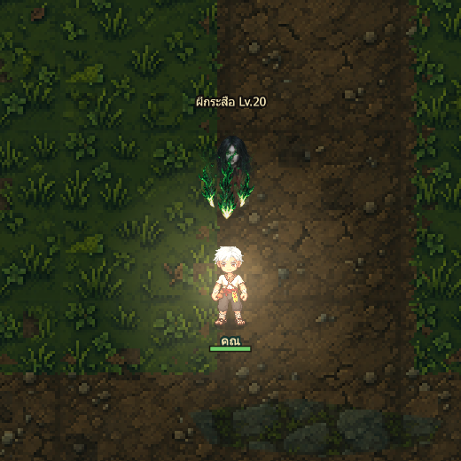
south · เฟรมปล่อยของมอนสเตอร์ 3
จุดปล่อย (96,110) บนเฟรมต้นฉบับ
ดาเมจ 564ms · ต่างภาพถึงเป้า 46ms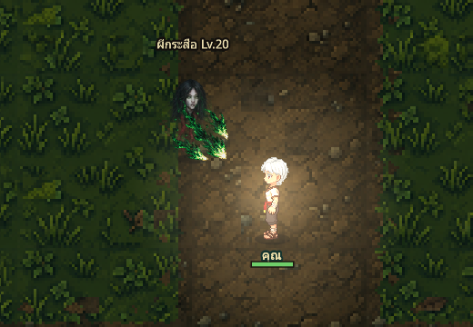
south-east · เฟรมปล่อยของมอนสเตอร์ 3
จุดปล่อย (110,122) บนเฟรมต้นฉบับ
ดาเมจ 564ms · ต่างภาพถึงเป้า 48ms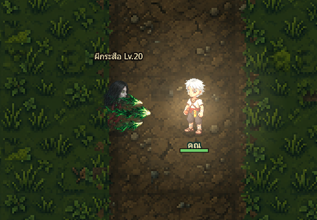
east · เฟรมปล่อยของมอนสเตอร์ 3
จุดปล่อย (108,123) บนเฟรมต้นฉบับ
ดาเมจ 563ms · ต่างภาพถึงเป้า 46ms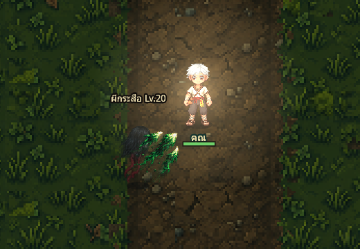
north-east · เฟรมปล่อยของมอนสเตอร์ 3
จุดปล่อย (142,107) บนเฟรมต้นฉบับ
ดาเมจ 562ms · ต่างภาพถึงเป้า 46ms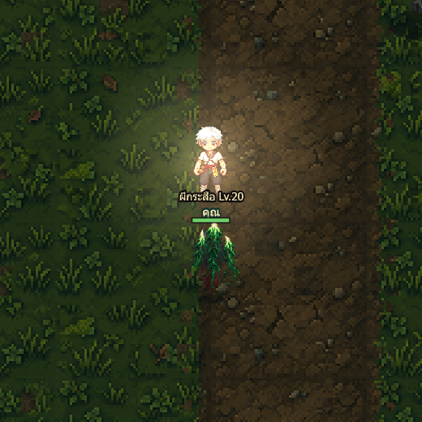
north · เฟรมปล่อยของมอนสเตอร์ 3
จุดปล่อย (96,104) บนเฟรมต้นฉบับ
ดาเมจ 563ms · ต่างภาพถึงเป้า 44ms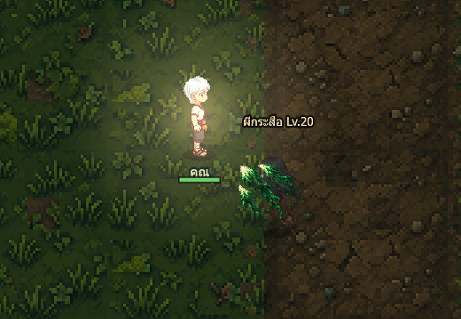
north-west · เฟรมปล่อยของมอนสเตอร์ 3
จุดปล่อย (73,122) บนเฟรมต้นฉบับ
ดาเมจ 563ms · ต่างภาพถึงเป้า 45ms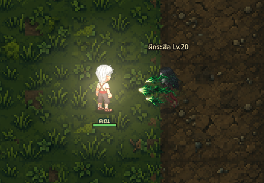
west · เฟรมปล่อยของมอนสเตอร์ 3
จุดปล่อย (74,123) บนเฟรมต้นฉบับ
ดาเมจ 564ms · ต่างภาพถึงเป้า 47ms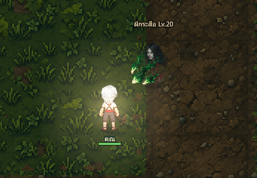
south-west · เฟรมปล่อยของมอนสเตอร์ 3
จุดปล่อย (81,122) บนเฟรมต้นฉบับ
ดาเมจ 562ms · ต่างภาพถึงเป้า 47msอุบุเมะ · ห่อผ้ามายาใบไม้
อิงห่อทารกที่กลายเป็นใบไม้หรือหิน ดัดแปลงเป็นผ้าพร้อมใบไม้พุ่งออกจากแขน ไม่แสดงร่างเด็ก
ระยะฐาน 3.1 ช่องโลก · ความเร็ว 4.5 ช่อง/วินาที · ยิงโดน8 / เดินหลบ8 / นอกระยะ1 ผ่าน
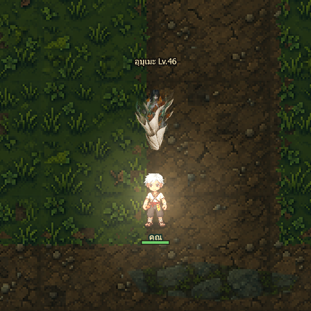
south · เฟรมปล่อยของมอนสเตอร์ 3
จุดปล่อย (96,112) บนเฟรมต้นฉบับ
ดาเมจ 703ms · ต่างภาพถึงเป้า 11ms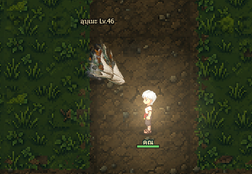
south-east · เฟรมปล่อยของมอนสเตอร์ 3
จุดปล่อย (117,112) บนเฟรมต้นฉบับ
ดาเมจ 707ms · ต่างภาพถึงเป้า 18ms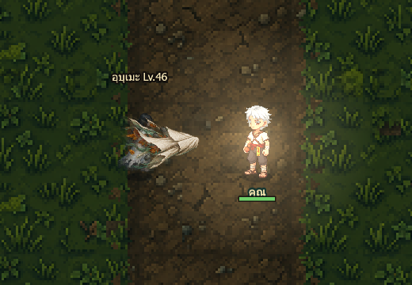
east · เฟรมปล่อยของมอนสเตอร์ 3
จุดปล่อย (123,110) บนเฟรมต้นฉบับ
ดาเมจ 703ms · ต่างภาพถึงเป้า 12ms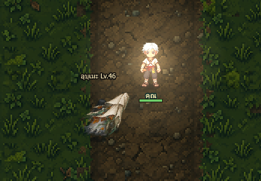
north-east · เฟรมปล่อยของมอนสเตอร์ 3
จุดปล่อย (130,107) บนเฟรมต้นฉบับ
ดาเมจ 706ms · ต่างภาพถึงเป้า 13ms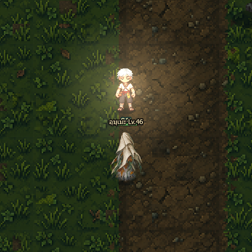
north · เฟรมปล่อยของมอนสเตอร์ 3
จุดปล่อย (96,112) บนเฟรมต้นฉบับ
ดาเมจ 701ms · ต่างภาพถึงเป้า 8ms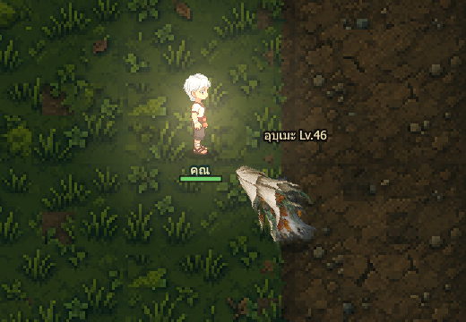
north-west · เฟรมปล่อยของมอนสเตอร์ 3
จุดปล่อย (53,108) บนเฟรมต้นฉบับ
ดาเมจ 707ms · ต่างภาพถึงเป้า 15ms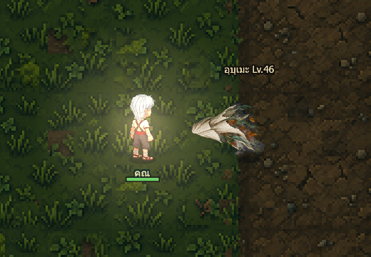
west · เฟรมปล่อยของมอนสเตอร์ 3
จุดปล่อย (58,110) บนเฟรมต้นฉบับ
ดาเมจ 703ms · ต่างภาพถึงเป้า 10ms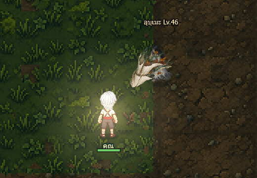
south-west · เฟรมปล่อยของมอนสเตอร์ 3
จุดปล่อย (62,111) บนเฟรมต้นฉบับ
ดาเมจ 704ms · ต่างภาพถึงเป้า 17msผีสาวอาลัย · เส้นผมอาลัย
ความอาลัยและเส้นผมยาวในภาพเดิม ดัดแปลงเป็นปอยผมวิญญาณเอื้อมระยะกลาง
ระยะฐาน 3.4 ช่องโลก · ความเร็ว 6.5 ช่อง/วินาที · ยิงโดน8 / เดินหลบ8 / นอกระยะ1 ผ่าน
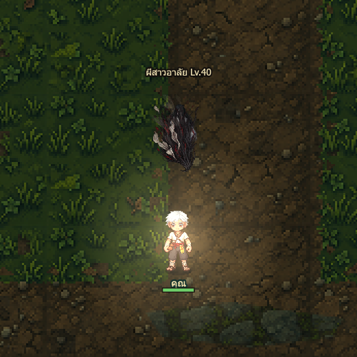
south · เฟรมปล่อยของมอนสเตอร์ 2
จุดปล่อย (96,85) บนเฟรมต้นฉบับ
ดาเมจ 563ms · ต่างภาพถึงเป้า 39ms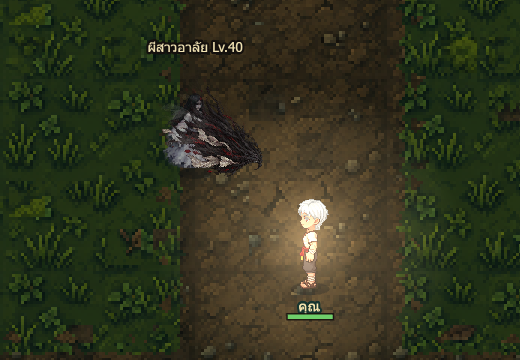
south-east · เฟรมปล่อยของมอนสเตอร์ 2
จุดปล่อย (116,90) บนเฟรมต้นฉบับ
ดาเมจ 564ms · ต่างภาพถึงเป้า 39ms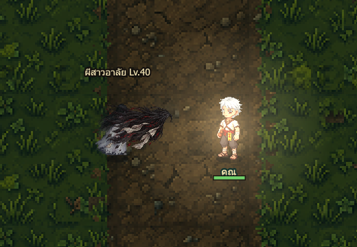
east · เฟรมปล่อยของมอนสเตอร์ 2
จุดปล่อย (117,90) บนเฟรมต้นฉบับ
ดาเมจ 564ms · ต่างภาพถึงเป้า 37ms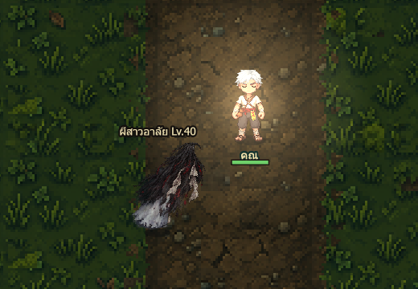
north-east · เฟรมปล่อยของมอนสเตอร์ 2
จุดปล่อย (113,87) บนเฟรมต้นฉบับ
ดาเมจ 562ms · ต่างภาพถึงเป้า 41ms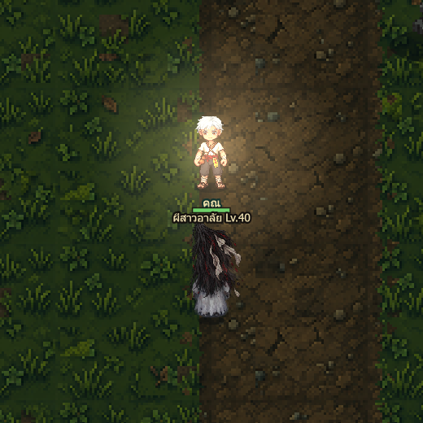
north · เฟรมปล่อยของมอนสเตอร์ 2
จุดปล่อย (96,86) บนเฟรมต้นฉบับ
ดาเมจ 563ms · ต่างภาพถึงเป้า 37ms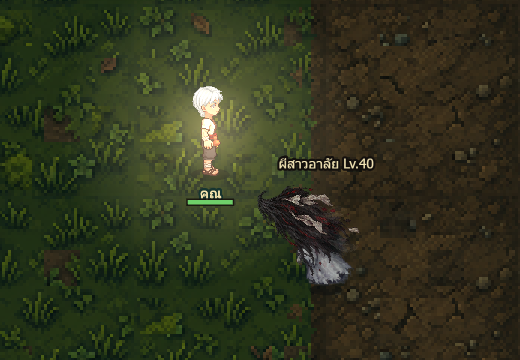
north-west · เฟรมปล่อยของมอนสเตอร์ 2
จุดปล่อย (75,88) บนเฟรมต้นฉบับ
ดาเมจ 562ms · ต่างภาพถึงเป้า 38ms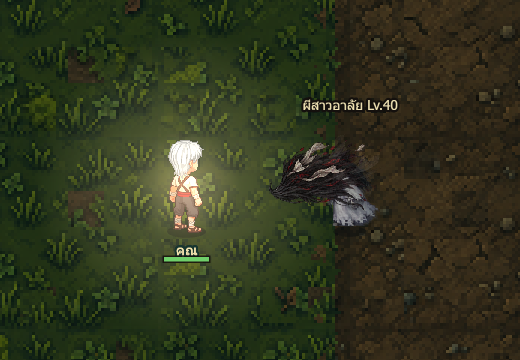
west · เฟรมปล่อยของมอนสเตอร์ 2
จุดปล่อย (76,88) บนเฟรมต้นฉบับ
ดาเมจ 563ms · ต่างภาพถึงเป้า 38ms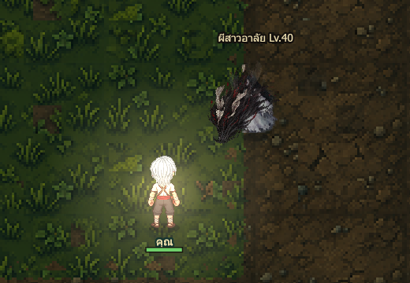
south-west · เฟรมปล่อยของมอนสเตอร์ 2
จุดปล่อย (81,88) บนเฟรมต้นฉบับ
ดาเมจ 562ms · ต่างภาพถึงเป้า 35msผีน้ำเกาหลี · มือผีน้ำ
อิงผีน้ำคว้าคนจมน้ำ ดัดแปลงเป็นเงามือเปียกพร้อมสาหร่ายที่พุ่งไปยังจุดเล็ง
ระยะฐาน 3.8 ช่องโลก · ความเร็ว 5.5 ช่อง/วินาที · ยิงโดน8 / เดินหลบ8 / นอกระยะ1 ผ่าน
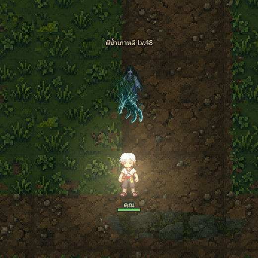
south · เฟรมปล่อยของมอนสเตอร์ 3
จุดปล่อย (96,110) บนเฟรมต้นฉบับ
ดาเมจ 699ms · ต่างภาพถึงเป้า 12ms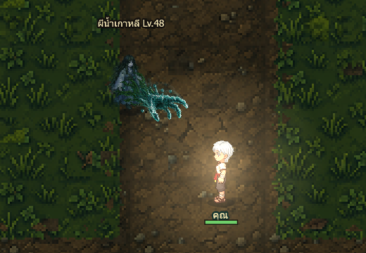
south-east · เฟรมปล่อยของมอนสเตอร์ 3
จุดปล่อย (123,110) บนเฟรมต้นฉบับ
ดาเมจ 702ms · ต่างภาพถึงเป้า 13ms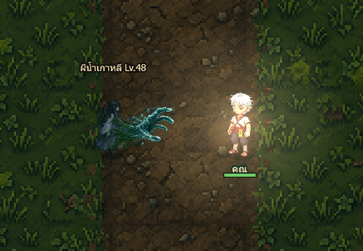
east · เฟรมปล่อยของมอนสเตอร์ 3
จุดปล่อย (117,111) บนเฟรมต้นฉบับ
ดาเมจ 703ms · ต่างภาพถึงเป้า 11ms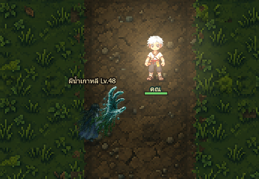
north-east · เฟรมปล่อยของมอนสเตอร์ 3
จุดปล่อย (126,109) บนเฟรมต้นฉบับ
ดาเมจ 702ms · ต่างภาพถึงเป้า 13ms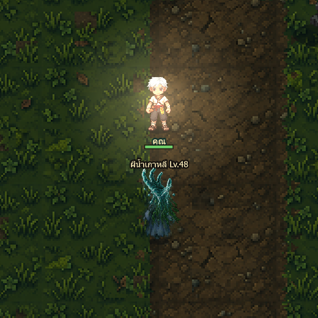
north · เฟรมปล่อยของมอนสเตอร์ 3
จุดปล่อย (96,111) บนเฟรมต้นฉบับ
ดาเมจ 702ms · ต่างภาพถึงเป้า 11ms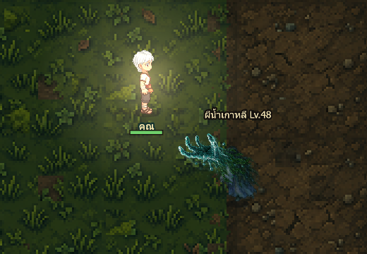
north-west · เฟรมปล่อยของมอนสเตอร์ 3
จุดปล่อย (65,109) บนเฟรมต้นฉบับ
ดาเมจ 705ms · ต่างภาพถึงเป้า 14ms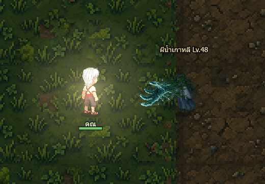
west · เฟรมปล่อยของมอนสเตอร์ 3
จุดปล่อย (73,111) บนเฟรมต้นฉบับ
ดาเมจ 703ms · ต่างภาพถึงเป้า 10ms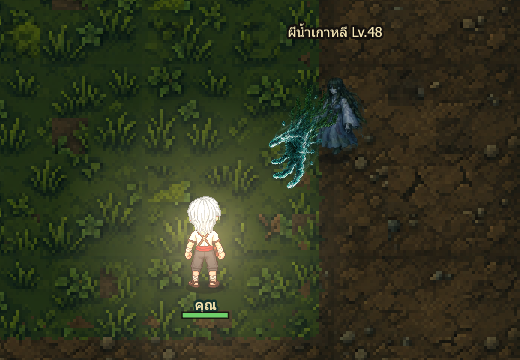
south-west · เฟรมปล่อยของมอนสเตอร์ 3
จุดปล่อย (71,112) บนเฟรมต้นฉบับ
ดาเมจ 702ms · ต่างภาพถึงเป้า 11msจิ้งจอกเก้าหาง · เปลววิญญาณเก้าหาง
อิงจิ้งจอกเก้าหางและอำนาจลวงตา ดัดแปลงเป็นเปลวเล็กเก้าสาย ไม่มีลูกแก้วพลังทั่วไป
ระยะฐาน 6.1 ช่องโลก · ความเร็ว 8 ช่อง/วินาที · ยิงโดน8 / เดินหลบ8 / นอกระยะ1 ผ่าน
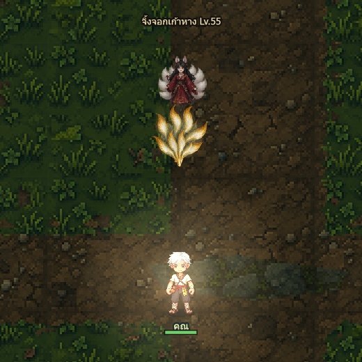
south · เฟรมปล่อยของมอนสเตอร์ 3
จุดปล่อย (96,112) บนเฟรมต้นฉบับ
ดาเมจ 795ms · ต่างภาพถึงเป้า 35ms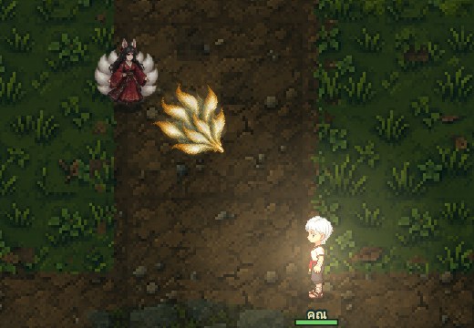
south-east · เฟรมปล่อยของมอนสเตอร์ 3
จุดปล่อย (140,113) บนเฟรมต้นฉบับ
ดาเมจ 795ms · ต่างภาพถึงเป้า 38ms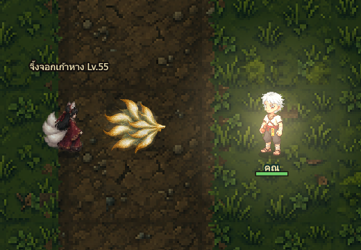
east · เฟรมปล่อยของมอนสเตอร์ 3
จุดปล่อย (137,113) บนเฟรมต้นฉบับ
ดาเมจ 795ms · ต่างภาพถึงเป้า 30ms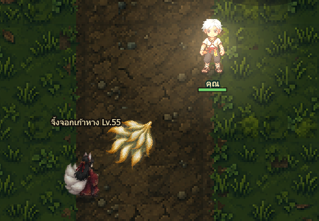
north-east · เฟรมปล่อยของมอนสเตอร์ 3
จุดปล่อย (142,116) บนเฟรมต้นฉบับ
ดาเมจ 796ms · ต่างภาพถึงเป้า 35ms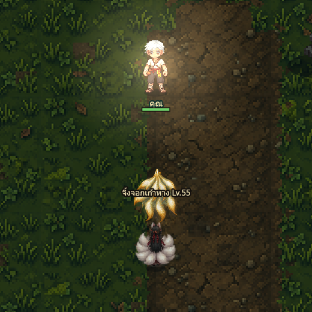
north · เฟรมปล่อยของมอนสเตอร์ 3
จุดปล่อย (96,116) บนเฟรมต้นฉบับ
ดาเมจ 795ms · ต่างภาพถึงเป้า 38ms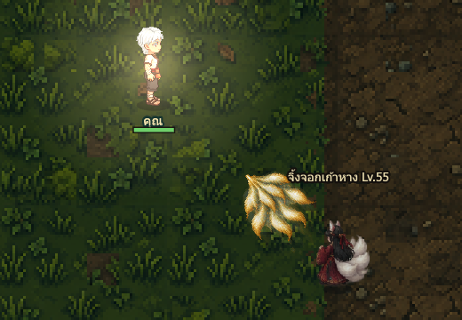
north-west · เฟรมปล่อยของมอนสเตอร์ 3
จุดปล่อย (53,116) บนเฟรมต้นฉบับ
ดาเมจ 795ms · ต่างภาพถึงเป้า 33ms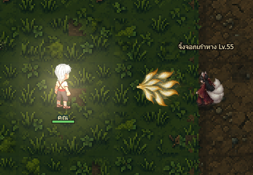
west · เฟรมปล่อยของมอนสเตอร์ 3
จุดปล่อย (54,114) บนเฟรมต้นฉบับ
ดาเมจ 798ms · ต่างภาพถึงเป้า 38ms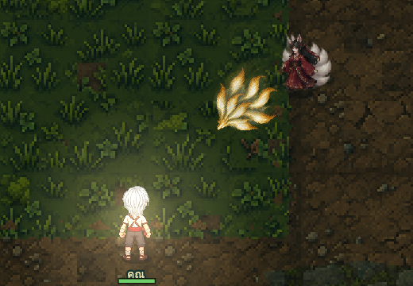
south-west · เฟรมปล่อยของมอนสเตอร์ 3
จุดปล่อย (55,112) บนเฟรมต้นฉบับ
ดาเมจ 794ms · ต่างภาพถึงเป้า 32msผีหนุ่มอาลัย · ชายแขนเสื้ออาลัย
อิงผีหนุ่มผู้ยังมีห่วง ดัดแปลงจากฝ่ามือและแขนเสื้อเดิมเป็นปมผ้าอาลัยพุ่งสั้น
ระยะฐาน 3.2 ช่องโลก · ความเร็ว 6 ช่อง/วินาที · ยิงโดน8 / เดินหลบ8 / นอกระยะ1 ผ่าน
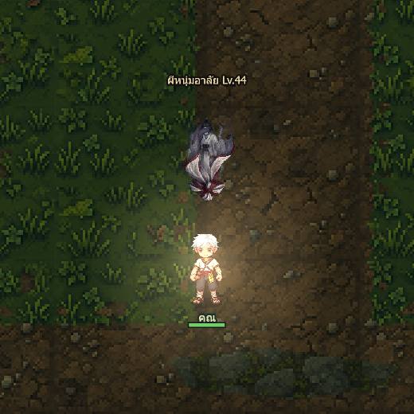
south · เฟรมปล่อยของมอนสเตอร์ 3
จุดปล่อย (96,110) บนเฟรมต้นฉบับ
ดาเมจ 564ms · ต่างภาพถึงเป้า 31ms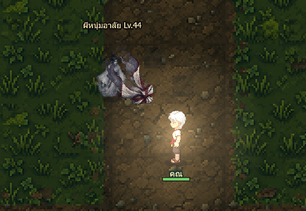
south-east · เฟรมปล่อยของมอนสเตอร์ 3
จุดปล่อย (137,110) บนเฟรมต้นฉบับ
ดาเมจ 563ms · ต่างภาพถึงเป้า 33ms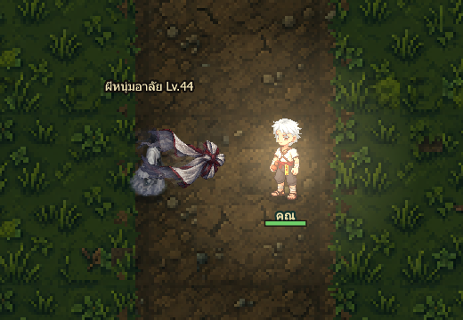
east · เฟรมปล่อยของมอนสเตอร์ 3
จุดปล่อย (139,110) บนเฟรมต้นฉบับ
ดาเมจ 565ms · ต่างภาพถึงเป้า 32ms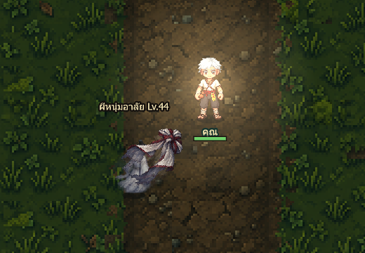
north-east · เฟรมปล่อยของมอนสเตอร์ 3
จุดปล่อย (137,111) บนเฟรมต้นฉบับ
ดาเมจ 562ms · ต่างภาพถึงเป้า 32ms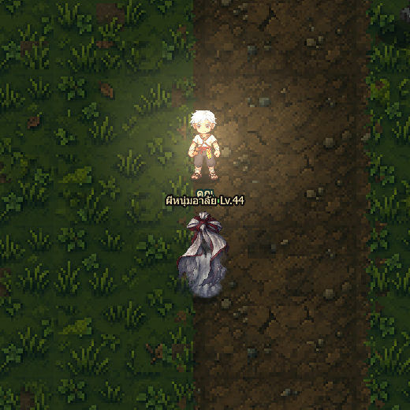
north · เฟรมปล่อยของมอนสเตอร์ 3
จุดปล่อย (96,110) บนเฟรมต้นฉบับ
ดาเมจ 564ms · ต่างภาพถึงเป้า 33ms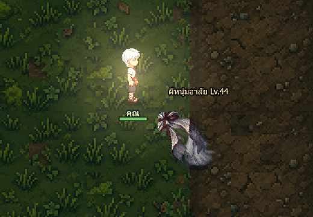
north-west · เฟรมปล่อยของมอนสเตอร์ 3
จุดปล่อย (55,111) บนเฟรมต้นฉบับ
ดาเมจ 563ms · ต่างภาพถึงเป้า 31ms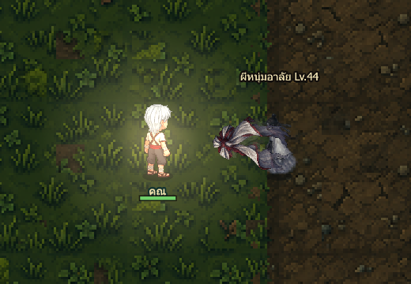
west · เฟรมปล่อยของมอนสเตอร์ 3
จุดปล่อย (53,110) บนเฟรมต้นฉบับ
ดาเมจ 561ms · ต่างภาพถึงเป้า 28ms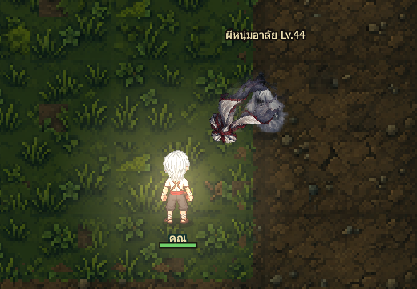
south-west · เฟรมปล่อยของมอนสเตอร์ 3
จุดปล่อย (53,109) บนเฟรมต้นฉบับ
ดาเมจ 566ms · ต่างภาพถึงเป้า 32msรูซัลกา · ปอยผมธารา
อิงวิญญาณหญิงแห่งน้ำและผมสาหร่ายในแบบเดิม ดัดแปลงเป็นปอยผมเปียกคดเคี้ยว
ระยะฐาน 4.4 ช่องโลก · ความเร็ว 5.8 ช่อง/วินาที · ยิงโดน8 / เดินหลบ8 / นอกระยะ1 ผ่าน
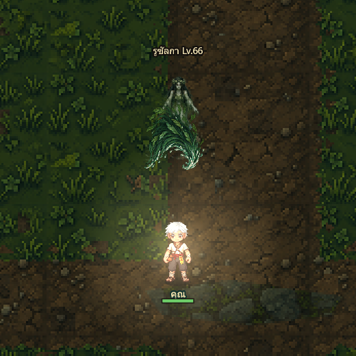
south · เฟรมปล่อยของมอนสเตอร์ 2
จุดปล่อย (112,103) บนเฟรมต้นฉบับ
ดาเมจ 797ms · ต่างภาพถึงเป้า 36ms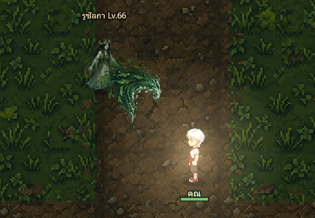
south-east · เฟรมปล่อยของมอนสเตอร์ 2
จุดปล่อย (150,103) บนเฟรมต้นฉบับ
ดาเมจ 799ms · ต่างภาพถึงเป้า 37mseast · เฟรมปล่อยของมอนสเตอร์ 2
จุดปล่อย (123,104) บนเฟรมต้นฉบับ
ดาเมจ 797ms · ต่างภาพถึงเป้า 38msnorth-east · เฟรมปล่อยของมอนสเตอร์ 2
จุดปล่อย (146,102) บนเฟรมต้นฉบับ
ดาเมจ 797ms · ต่างภาพถึงเป้า 38msnorth · เฟรมปล่อยของมอนสเตอร์ 2
จุดปล่อย (112,104) บนเฟรมต้นฉบับ
ดาเมจ 798ms · ต่างภาพถึงเป้า 38msnorth-west · เฟรมปล่อยของมอนสเตอร์ 2
จุดปล่อย (72,102) บนเฟรมต้นฉบับ
ดาเมจ 794ms · ต่างภาพถึงเป้า 32mswest · เฟรมปล่อยของมอนสเตอร์ 2
จุดปล่อย (88,102) บนเฟรมต้นฉบับ
ดาเมจ 796ms · ต่างภาพถึงเป้า 39mssouth-west · เฟรมปล่อยของมอนสเตอร์ 2
จุดปล่อย (68,103) บนเฟรมต้นฉบับ
ดาเมจ 796ms · ต่างภาพถึงเป้า 33msอูตบูร์ดูร์ · เสียงครวญผ้าห่อ
อิงวิญญาณในห่อผ้าตาม lore เกม ดัดแปลงเสียงครวญเป็นระลอกขาดช่วงและเส้นใยผ้า ไม่มีร่างเด็ก
ระยะฐาน 4.1 ช่องโลก · ความเร็ว 6.2 ช่อง/วินาที · ยิงโดน8 / เดินหลบ8 / นอกระยะ1 ผ่าน
south · เฟรมปล่อยของมอนสเตอร์ 3
จุดปล่อย (96,119) บนเฟรมต้นฉบับ
ดาเมจ 704ms · ต่างภาพถึงเป้า 39mssouth-east · เฟรมปล่อยของมอนสเตอร์ 3
จุดปล่อย (108,118) บนเฟรมต้นฉบับ
ดาเมจ 702ms · ต่างภาพถึงเป้า 39mseast · เฟรมปล่อยของมอนสเตอร์ 3
จุดปล่อย (113,119) บนเฟรมต้นฉบับ
ดาเมจ 704ms · ต่างภาพถึงเป้า 44msnorth-east · เฟรมปล่อยของมอนสเตอร์ 3
จุดปล่อย (111,118) บนเฟรมต้นฉบับ
ดาเมจ 703ms · ต่างภาพถึงเป้า 38msnorth · เฟรมปล่อยของมอนสเตอร์ 3
จุดปล่อย (96,119) บนเฟรมต้นฉบับ
ดาเมจ 704ms · ต่างภาพถึงเป้า 39msnorth-west · เฟรมปล่อยของมอนสเตอร์ 3
จุดปล่อย (71,118) บนเฟรมต้นฉบับ
ดาเมจ 703ms · ต่างภาพถึงเป้า 40mswest · เฟรมปล่อยของมอนสเตอร์ 3
จุดปล่อย (74,119) บนเฟรมต้นฉบับ
ดาเมจ 702ms · ต่างภาพถึงเป้า 42mssouth-west · เฟรมปล่อยของมอนสเตอร์ 3
จุดปล่อย (80,118) บนเฟรมต้นฉบับ
ดาเมจ 703ms · ต่างภาพถึงเป้า 39ms นฺหวี่กุ่ย · แพรอาฆาต
อิงผีหญิงอาฆาตและชุดจีนเดิม ดัดแปลงชายแขนเสื้อเป็นแพรแดงสองสาย
ระยะฐาน 4.2 ช่องโลก · ความเร็ว 6.4 ช่อง/วินาที · ยิงโดน8 / เดินหลบ8 / นอกระยะ1 ผ่าน
south · เฟรมปล่อยของมอนสเตอร์ 3
จุดปล่อย (96,110) บนเฟรมต้นฉบับ
ดาเมจ 704ms · ต่างภาพถึงเป้า 47mssouth-east · เฟรมปล่อยของมอนสเตอร์ 3
จุดปล่อย (131,108) บนเฟรมต้นฉบับ
ดาเมจ 702ms · ต่างภาพถึงเป้า 45mseast · เฟรมปล่อยของมอนสเตอร์ 3
จุดปล่อย (111,109) บนเฟรมต้นฉบับ
ดาเมจ 703ms · ต่างภาพถึงเป้า 44msnorth-east · เฟรมปล่อยของมอนสเตอร์ 3
จุดปล่อย (116,108) บนเฟรมต้นฉบับ
ดาเมจ 702ms · ต่างภาพถึงเป้า 47msnorth · เฟรมปล่อยของมอนสเตอร์ 3
จุดปล่อย (96,109) บนเฟรมต้นฉบับ
ดาเมจ 703ms · ต่างภาพถึงเป้า 48msnorth-west · เฟรมปล่อยของมอนสเตอร์ 3
จุดปล่อย (62,108) บนเฟรมต้นฉบับ
ดาเมจ 702ms · ต่างภาพถึงเป้า 48mswest · เฟรมปล่อยของมอนสเตอร์ 3
จุดปล่อย (65,109) บนเฟรมต้นฉบับ
ดาเมจ 702ms · ต่างภาพถึงเป้า 46mssouth-west · เฟรมปล่อยของมอนสเตอร์ 3
จุดปล่อย (59,110) บนเฟรมต้นฉบับ
ดาเมจ 702ms · ต่างภาพถึงเป้า 49ms สุ่ยกุ่ย · กรงเล็บสายน้ำ
อิงผีน้ำที่ดึงคนจม ดัดแปลงเป็นสามนิ้วน้ำงอพร้อมหยดน้ำจากแขนเสื้อเปียก
ระยะฐาน 3.9 ช่องโลก · ความเร็ว 5.4 ช่อง/วินาที · ยิงโดน8 / เดินหลบ8 / นอกระยะ1 ผ่าน
south · เฟรมปล่อยของมอนสเตอร์ 3
จุดปล่อย (96,109) บนเฟรมต้นฉบับ
ดาเมจ 751ms · ต่างภาพถึงเป้า 33mssouth-east · เฟรมปล่อยของมอนสเตอร์ 3
จุดปล่อย (129,108) บนเฟรมต้นฉบับ
ดาเมจ 749ms · ต่างภาพถึงเป้า 31mseast · เฟรมปล่อยของมอนสเตอร์ 3
จุดปล่อย (125,107) บนเฟรมต้นฉบับ
ดาเมจ 750ms · ต่างภาพถึงเป้า 33msnorth-east · เฟรมปล่อยของมอนสเตอร์ 3
จุดปล่อย (122,108) บนเฟรมต้นฉบับ
ดาเมจ 749ms · ต่างภาพถึงเป้า 33msnorth · เฟรมปล่อยของมอนสเตอร์ 3
จุดปล่อย (96,109) บนเฟรมต้นฉบับ
ดาเมจ 738ms · ต่างภาพถึงเป้า 20msnorth-west · เฟรมปล่อยของมอนสเตอร์ 3
จุดปล่อย (59,107) บนเฟรมต้นฉบับ
ดาเมจ 750ms · ต่างภาพถึงเป้า 29mswest · เฟรมปล่อยของมอนสเตอร์ 3
จุดปล่อย (55,107) บนเฟรมต้นฉบับ
ดาเมจ 751ms · ต่างภาพถึงเป้า 31mssouth-west · เฟรมปล่อยของมอนสเตอร์ 3
จุดปล่อย (55,108) บนเฟรมต้นฉบับ
ดาเมจ 749ms · ต่างภาพถึงเป้า 31ms หูหลีจิง · เงาลวงจิ้งจอก
อิงวิญญาณจิ้งจอกแปลงกาย ดัดแปลงเป็นเงาหัวจิ้งจอกและแพรหางสามสายตามแบบตัวนี้ แยกจากเก้าหางเกาหลี
ระยะฐาน 5.7 ช่องโลก · ความเร็ว 7.8 ช่อง/วินาที · ยิงโดน8 / เดินหลบ8 / นอกระยะ1 ผ่าน
south · เฟรมปล่อยของมอนสเตอร์ 3
จุดปล่อย (96,98) บนเฟรมต้นฉบับ
ดาเมจ 748ms · ต่างภาพถึงเป้า 20mssouth-east · เฟรมปล่อยของมอนสเตอร์ 3
จุดปล่อย (130,98) บนเฟรมต้นฉบับ
ดาเมจ 750ms · ต่างภาพถึงเป้า 16mseast · เฟรมปล่อยของมอนสเตอร์ 3
จุดปล่อย (143,96) บนเฟรมต้นฉบับ
ดาเมจ 749ms · ต่างภาพถึงเป้า 17msnorth-east · เฟรมปล่อยของมอนสเตอร์ 3
จุดปล่อย (135,96) บนเฟรมต้นฉบับ
ดาเมจ 751ms · ต่างภาพถึงเป้า 18msnorth · เฟรมปล่อยของมอนสเตอร์ 3
จุดปล่อย (96,95) บนเฟรมต้นฉบับ
ดาเมจ 751ms · ต่างภาพถึงเป้า 18msnorth-west · เฟรมปล่อยของมอนสเตอร์ 3
จุดปล่อย (47,95) บนเฟรมต้นฉบับ
ดาเมจ 750ms · ต่างภาพถึงเป้า 16mswest · เฟรมปล่อยของมอนสเตอร์ 3
จุดปล่อย (49,96) บนเฟรมต้นฉบับ
ดาเมจ 749ms · ต่างภาพถึงเป้า 14mssouth-west · เฟรมปล่อยของมอนสเตอร์ 3
จุดปล่อย (52,98) บนเฟรมต้นฉบับ
ดาเมจ 748ms · ต่างภาพถึงเป้า 19ms เนิกเคน · สายกกลวงน้ำ
อิงภูตน้ำล่อลวงสู่ทะเลสาบ ดัดแปลงเป็นสายกกเกี่ยวพร้อมระลอกน้ำ
ระยะฐาน 5.4 ช่องโลก · ความเร็ว 5.2 ช่อง/วินาที · ยิงโดน8 / เดินหลบ8 / นอกระยะ1 ผ่าน
south · เฟรมปล่อยของมอนสเตอร์ 3
จุดปล่อย (96,109) บนเฟรมต้นฉบับ
ดาเมจ 1082ms · ต่างภาพถึงเป้า 42mssouth-east · เฟรมปล่อยของมอนสเตอร์ 3
จุดปล่อย (114,107) บนเฟรมต้นฉบับ
ดาเมจ 1076ms · ต่างภาพถึงเป้า 40mseast · เฟรมปล่อยของมอนสเตอร์ 3
จุดปล่อย (115,103) บนเฟรมต้นฉบับ
ดาเมจ 1075ms · ต่างภาพถึงเป้า 38msnorth-east · เฟรมปล่อยของมอนสเตอร์ 3
จุดปล่อย (137,105) บนเฟรมต้นฉบับ
ดาเมจ 1075ms · ต่างภาพถึงเป้า 38msnorth · เฟรมปล่อยของมอนสเตอร์ 3
จุดปล่อย (96,110) บนเฟรมต้นฉบับ
ดาเมจ 1079ms · ต่างภาพถึงเป้า 38msnorth-west · เฟรมปล่อยของมอนสเตอร์ 3
จุดปล่อย (50,106) บนเฟรมต้นฉบับ
ดาเมจ 1075ms · ต่างภาพถึงเป้า 40mswest · เฟรมปล่อยของมอนสเตอร์ 3
จุดปล่อย (59,103) บนเฟรมต้นฉบับ
ดาเมจ 1076ms · ต่างภาพถึงเป้า 41mssouth-west · เฟรมปล่อยของมอนสเตอร์ 3
จุดปล่อย (61,103) บนเฟรมต้นฉบับ
ดาเมจ 1077ms · ต่างภาพถึงเป้า 40ms ฟอสเซกริม · คลื่นซอแห่งน้ำตก
อิงภูตน้ำตกผู้เล่นซอ ใช้คลื่นเสียงโค้งซ้อนกับสายละอองน้ำจากคันชักเดิม
ระยะฐาน 6.8 ช่องโลก · ความเร็ว 9 ช่อง/วินาที · ยิงโดน8 / เดินหลบ8 / นอกระยะ1 ผ่าน
south · เฟรมปล่อยของมอนสเตอร์ 3
จุดปล่อย (105,83) บนเฟรมต้นฉบับ
ดาเมจ 796ms · ต่างภาพถึงเป้า 40mssouth-east · เฟรมปล่อยของมอนสเตอร์ 3
จุดปล่อย (110,90) บนเฟรมต้นฉบับ
ดาเมจ 796ms · ต่างภาพถึงเป้า 40mseast · เฟรมปล่อยของมอนสเตอร์ 3
จุดปล่อย (102,99) บนเฟรมต้นฉบับ
ดาเมจ 796ms · ต่างภาพถึงเป้า 43msnorth-east · เฟรมปล่อยของมอนสเตอร์ 3
จุดปล่อย (113,82) บนเฟรมต้นฉบับ
ดาเมจ 795ms · ต่างภาพถึงเป้า 45msnorth · เฟรมปล่อยของมอนสเตอร์ 3
จุดปล่อย (100,100) บนเฟรมต้นฉบับ
ดาเมจ 799ms · ต่างภาพถึงเป้า 47msnorth-west · เฟรมปล่อยของมอนสเตอร์ 3
จุดปล่อย (62,90) บนเฟรมต้นฉบับ
ดาเมจ 795ms · ต่างภาพถึงเป้า 42mswest · เฟรมปล่อยของมอนสเตอร์ 3
จุดปล่อย (60,95) บนเฟรมต้นฉบับ
ดาเมจ 799ms · ต่างภาพถึงเป้า 47mssouth-west · เฟรมปล่อยของมอนสเตอร์ 3
จุดปล่อย (98,85) บนเฟรมต้นฉบับ
ดาเมจ 794ms · ต่างภาพถึงเป้า 39ms มาเร · เงากดทับฝันร้าย
อิงวิญญาณกดทับผู้หลับ ดัดแปลงเป็นเงาฝ่ามือสามรอยที่คืบสู่จุดเล็ง ไม่เพิ่มสถานะหลับโดยพลการ
ระยะฐาน 4.6 ช่องโลก · ความเร็ว 6.8 ช่อง/วินาที · ยิงโดน8 / เดินหลบ8 / นอกระยะ1 ผ่าน
south · เฟรมปล่อยของมอนสเตอร์ 3
จุดปล่อย (96,103) บนเฟรมต้นฉบับ
ดาเมจ 703ms · ต่างภาพถึงเป้า 27mssouth-east · เฟรมปล่อยของมอนสเตอร์ 3
จุดปล่อย (133,104) บนเฟรมต้นฉบับ
ดาเมจ 704ms · ต่างภาพถึงเป้า 24mseast · เฟรมปล่อยของมอนสเตอร์ 3
จุดปล่อย (115,104) บนเฟรมต้นฉบับ
ดาเมจ 703ms · ต่างภาพถึงเป้า 30msnorth-east · เฟรมปล่อยของมอนสเตอร์ 3
จุดปล่อย (124,104) บนเฟรมต้นฉบับ
ดาเมจ 704ms · ต่างภาพถึงเป้า 30msnorth · เฟรมปล่อยของมอนสเตอร์ 3
จุดปล่อย (96,103) บนเฟรมต้นฉบับ
ดาเมจ 703ms · ต่างภาพถึงเป้า 28msnorth-west · เฟรมปล่อยของมอนสเตอร์ 3
จุดปล่อย (69,103) บนเฟรมต้นฉบับ
ดาเมจ 704ms · ต่างภาพถึงเป้า 25mswest · เฟรมปล่อยของมอนสเตอร์ 3
จุดปล่อย (77,104) บนเฟรมต้นฉบับ
ดาเมจ 702ms · ต่างภาพถึงเป้า 28mssouth-west · เฟรมปล่อยของมอนสเตอร์ 3
จุดปล่อย (59,104) บนเฟรมต้นฉบับ
ดาเมจ 702ms · ต่างภาพถึงเป้า 25ms